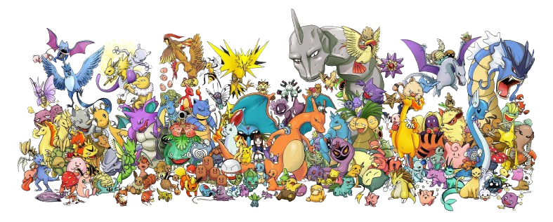
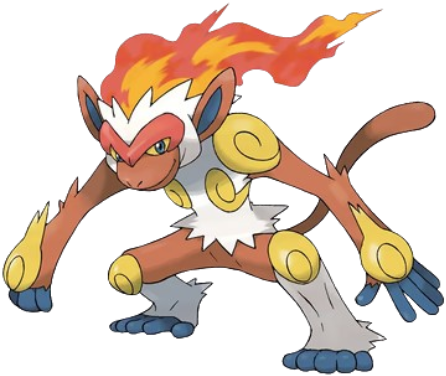
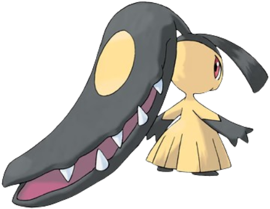
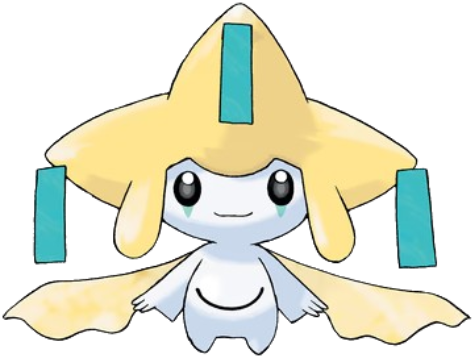

Esperamos que tenha uma boa experiência
Pokémon
Aqui vocês aprenderão sobre as 4 primeiras gerações de pokémon:- Geração: Kanto
- Geração: Johto
- Geração: Hoenn
- Geração: Sinnoh
| Jogo | Geração | Pokémons |
|---|---|---|
| Red/Blue/Yellow | 1ª Geração | 151 |
| Gold/Silver/Crystal | 2ª Geração | 251 |
| Ruby/Sapphire/Emerald | 3ª Geração | 386 | Diamond/Pearl/Platinum | 4ª Geração | 493 |
As 4 primeiras gerações tem suas regiões inspiradas no Japão, o que acarreta também na presença de muitos pokémons ligados à cultura japonesa, como deuses e comidas típicas:

Infernape: inspirado no Deus Macaco

Mawile: inspirada no yōkai Futakuchi-onna

Jirachi: inspirado no festival Tanaba (Festival das Estrelas)
- O universo de Pokémon é um mundo cheio de aventuras, criaturas incríveis e histórias que marcaram gerações. Desde o seu início, a franquia convida jogadores a explorar regiões únicas, capturar Pokémon e se tornar um verdadeiro Mestre Pokémon. Se você está começando agora, as quatro primeiras gerações são o ponto de partida perfeito para conhecer essa jornada.
- Tudo começou com Pokémon Red and Blue, lançados para o Game Boy. Neles, somos apresentados à região de Kanto, onde os treinadores iniciam sua jornada escolhendo entre Bulbasaur, Charmander ou Squirtle. Esses jogos estabeleceram as bases da série: capturar, treinar, batalhar e trocar Pokémon com outros jogadores.
- A segunda geração chegou com Pokémon Gold and Silver, expandindo o mundo com a região de Johto. Aqui, novas mecânicas foram introduzidas, como o ciclo de dia e noite, além de mais Pokémon para descobrir. Um dos grandes diferenciais foi a possibilidade de revisitar Kanto após completar a jornada principal, algo que encantou os jogadores.
- Na terceira geração, com Pokémon Ruby and Sapphire, a franquia ganhou gráficos mais avançados e uma nova região: Hoenn. Esses jogos trouxeram habilidades únicas para cada Pokémon e batalhas com estratégias ainda mais profundas, além de explorar temas como natureza e equilíbrio ambiental.
- Já a quarta geração, com Pokémon Diamond and Pearl, levou a experiência para o Nintendo DS, com melhorias visuais e novas mecânicas online. A região de Sinnoh apresentou uma mitologia rica, envolvendo Pokémon lendários que controlam o tempo e o espaço, tornando a história ainda mais envolvente.
- Explorar essas quatro gerações é como viajar pela evolução dos jogos Pokémon. Cada uma delas trouxe novidades e ampliou o universo, mantendo sempre o espírito de aventura e descoberta. Se você nunca jogou, este é o momento perfeito para começar sua jornada, escolher seu primeiro Pokémon e descobrir tudo o que esse mundo tem a oferecer.